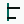

specimen — not product · OT-BRAND-001 Open Record
Open Record
opentrust.center
Source Serif 4 600, tracking −0.025em. Only the period before center is Evidence Teal.
Thesis
A civic evidence registry: black binding, white paper, one mineral-teal index. If the wordmark is removed the page must still look like a public record.
Type
A database of each company’s public trust ledger.
--t-lede · Atkinson Hyperlegible Next 16 / 24
Stripe
--t-title · Source Serif 4 28 / 32 · dossier name
Microsoft
--t-name · Source Serif 4 17 / 22 · register row
Official page on file. Marks cited on the public page.
--t-body · Atkinson 16 / 24
--t-meta · Atkinson 13 · tabular-nums on data
Stripe
Spine on the identity block. File is five rules, not a rating module.
Fig. n · caption
not on file
Unknown pair. Never green. Never a company trust badge.
Palette
#0B1411 record white
#F8FAF9 sheet white
#FFFFFF paper
#EDF2F0 graphite
#51615B evidence teal
#00685C index wash
#DDEFEA source
#E5F3EA attention
#FFF2D2 conflict
#FBE9E8
Teal ≤ 6% of a routine view. No rust. No second accent. No gradients.
Open Index

Not a circle, not a shield, not a check. Do not put it on a vendor status.
Evidence Spine
-
SOC 2 Type II
-
DPA
-
Named processor
Filled = source exists. Outline = pending or unknown. Split = conflict. Every node has text. Never a score gauge.
A register row
page · marks · DPA · subprocessors · years
| # | Name | Domain | File | Marks |
|---|---|---|---|---|
| 003 | Stripe | stripe.com | soc 2 · iso 27001 |
Hover or selected = 2px Evidence Teal spine at the left edge of the row. No wash. No node. File is five rules. Teal does not fill the rules.
Sins
Newsreader, IBM Plex Mono, Inter, Manrope, DM Sans, Space Grotesk. Rust, flame, espresso. Cards, pills, gradients, glow. A five-box file meter. A trust score. “Trusted company.” Get started / Unlock insights. An OT stamp that reads as certification. Teal filling chrome.
BRAND.md and OT-BRAND-001 are law.